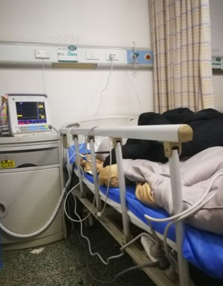
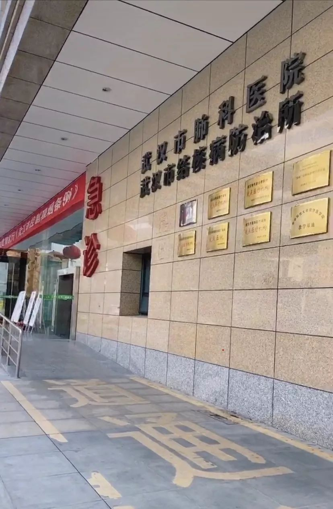
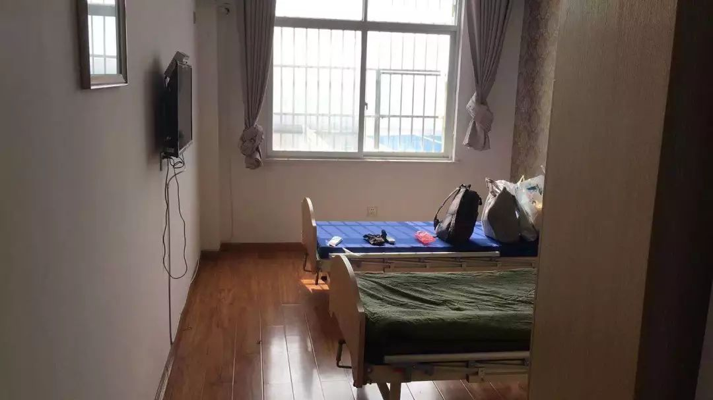
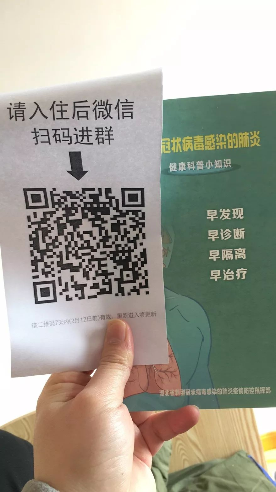

武汉会战：一场史无前例的超级行动
原文链接 备份链接 伴随着火神山、雷神山医院开始收治病人，15家方舱医院陆续启动， 各省医疗队开赴武汉，武汉所有确诊患者与疑似病例都将“应收尽收”。 在人类抗击疫病的历史上，“武汉会战”已成为一场史无前例的超级行动 图/新华、中新 武汉 …
“时间就是生命，收治工作刻不容缓，必须争分夺秒，全力以赴救治患者。”近日，中央赴湖北指导组就新冠肺炎防治连续发出指示，要真正做到应收尽收、不漏一人。
然而，记者了解到，武汉的社区和医院仍处于过载状态，许多无法得到及时救治的患者被迫在家隔离，周边照料的亲人也因此相继被感染。
怎样控制家庭中的交叉感染？如何保障“应收尽收”的落实？问题迫在眉睫。
全家四人先后感染，母亲在方舱医院转为重症
连日来，中央一再强调，不折不扣落实“四类人员”分类集中管理措施，“应收尽收、不漏一人”。“四类人员”，包括确诊患者、疑似患者、无法排除感染可能的发热患者、确诊患者的密切接触者。但在医疗资源严重不足的情况下，大多数获得关注的都是确诊的重症患者。被划入其他类型的市民只能苦苦等待，有些人甚至从密切接触者一步步拖成感染者。
李山的母亲年过六旬，前不久确诊感染，却找不到有床位的医院。经过多方反馈，李山终于将母亲送进武汉国际会展中心的方舱医院。然而，9日中午通电话时，母亲却告诉他，自己的情况不太好。
“她是6号进的方舱医院，现在轻症已转为重症，出现呼吸困难。方舱医院没有治疗设备，人手也不足，医生每天只能帮忙量体温，给点消炎药。就相当于换个地方隔离。”李山告诉记者。
李山一家六口，母亲最先出现症状，随后是父亲。但此前老两口去医院时，医院却拒绝给李山父亲做检查。“医生让我父亲过一个星期再去，但过了两天我父亲就觉得不对劲，又去了一趟医院才给做。”他说，上报社区后，父亲被安排到了武汉女子医院的隔离点。但那里就像宾馆一样“只能管吃管住”，父亲至今还没有得到任何治疗。
更糟糕的是，连日奔波下来，李山也已经确诊感染新冠肺炎，爱人则是高度疑似。两人的确诊过程和父亲类似，反复跑了几趟医院要求检查未果，最近才在社区得到检查机会。
“之前我想在武汉第一医院告检查，也跟医生说了我父母都感染了，但医生说症状不重不能做，只给做血常规和CT。2月7日下午在社区医院采集检测样本，8日我被确诊感染了，我老婆还需观察。”
2月8日，李山求助社区，被告知先回家等待，晚上八点社区会安排李山住院，并安排其家人隔离。但李山等到八点后，又被告知当天安排不了，需要在家等通知。
现在，李山和爱人仍然在家，家里还有两个孩子，大的八岁，小的只有四个月。虽然孩子暂时没有出现症状，但李山担心，孩子感染只是时间问题。除了吃饭，一家人在家里全天戴着口罩，包括睡觉的时候。医院现在收不收小孩？是不是需要去儿童医院？去了医院会不会感染风险更大？这几天，李山每天都很纠结。
“希望政府能把方舱医院的设备、药物和人手都配齐，让里面的病人尽快得到治疗，同时把重症病人早点转到正规医院。现在很多人没法确诊或者没法治疗，反复地去医院也很危险，容易导致病情扩散。像我们这样确诊的，其实也怕传染给更多的人。”李山说。
疑似患者难以被确诊和收治，家庭感染案例层出不穷
令人焦心的是，在武汉，像李山这样的家庭还有许许多多。一家人在居家隔离中先后出现不适、反复联系医院却被告知没有床位、无法住院治疗只能在门诊排队五六个小时打针……他们每天的生活，就在这样漫长的煎熬中度过。
王丽今年22岁，是武汉某大学的应届毕业生，家住江岸区。1月26日，她的父亲因高度疑似新冠肺炎，被送至武钢二医院进行隔离。
不久后，作为密切接触者的母亲也出现肺炎症状，定点医院CT显示“双肺感染”。王丽立刻将情况上报社区，希望社区给母亲安排核酸检测。但是社区却要求王丽的母亲先去隔离点，理由是母亲属于发热患者。无奈之下，王丽将母亲送到了江岸区后湖大道市民之家附近的指定隔离点。
随后，王丽再次联系社区街道办请求核酸检测，对方却表示隔离点有统一安排，要看隔离点的负责人怎么说。王丽转而联系隔离点，只得到“我了解，会尽快上报”的回复。就这样，王丽陷入了隔离点和街道办互相推脱的困境。
不做核酸检测、无法确诊，意味着母亲无法得到及时治疗。“妈妈所在的隔离点没有吸氧机，也没办法输液，她一个人在酒店跟我说她害怕。她想打针，她很难受，她想活下来。”王丽说。
而在另一边，王丽的父亲没能等到及时的治疗。她告诉记者，父亲在7日出现休克状态，随后转到武汉协和医院，医生诊断是因为肺炎引发了心肌炎、脑栓塞。就在昨天上午，47岁的王丽父亲已经不幸去世。

王丽的父亲在医院。
8日晚上，王丽去汉口医院做了CT，也发现了轻度感染情况。但是现在，她顾不上确认病情，只盼着母亲能早点确诊并得到治疗。
与王丽类似，家住汉阳区的余婷也是家人感染后求助社区未果，目前自己也出现身体不适。
余婷回忆，她的父亲1月底就已经拍了CT显示“双肺感染”，家人赶紧联系社区做核酸检测。但是，连续六天联系社区，得到的都是“我们只能汇报，不能解决”的答复。等待期间，她不得不带着父亲到家附近的医院门诊打针消炎，眼看着父亲从轻症转成了重症，却找不到医院可以收治。
更让余婷担心的是，之后父亲可能连打针的地方都没有了。“周围一些医院的门诊已经关闭了。我父亲在社区推荐的汉阳医院打针，打了6天没有好转，又自己去硚口区肺科医院看了4天。如果父亲的病一直得不到救治，可能我也管不上自己。”她说。

余婷陪父亲去肺科医院打针时拍的照片。
这些层出不穷的案例，反映出武汉当前的尴尬局面：市民在医院只能做CT检查，到社区做了核酸检测才能确诊；社区的人力严重不足且职权有限，无法及时安排市民进行核酸检测；在等待确诊的过程中，患者的家人作为密切接触者，也相继出现感染甚至全家感染；他们无法得到确诊和治疗，只能反复前往社区或医院门诊，加剧疫情的扩散风险。
隔离点没有治疗措施，患者也无法自行用药
记者注意到，重要要求实行“四类人员”分类集中管理措施后，许多疑似患者、发热患者被集中到隔离点。由于疫情形势紧张，隔离点只能先暂时安置患者，进一步的处理、上报及送医工作最近才缓慢走上正轨。
何冉一家住在蔡甸区，他太太除夕时出现了咳嗽、发热的症状，第二天便跟社区做了报备并进行自我隔离。在外求诊期间，太太的症状逐渐加重，何冉听说打球蛋白有用，就托朋友买了几支。他们本来想在发热门诊开药后到社区医院打针，发现社区打不了，只能去定点医院的发热门诊。“人太多了，打个针都排个把小时。”
2月2日，何冉陪太太在医院打针时，突然接到社区的统一隔离通知。“当时非常仓促，我们就简单收拾了一下，自己开车去到指定地点时已经夜里11点多了，也不知道该找谁。然后碰到一个接诊的人，跟他报了名字，他就把我老婆带到四楼去了。那里可能是紧急安排出来的一个地方，上楼时还看到有人打扫卫生。我老婆分到房间的时候都凌晨1点了。她说看到洗脸池里面还有血迹，也不敢用，反正就先住着。”何冉说。
然而，和李山、王丽家人遭遇的情况一样，何太太在隔离点里也没有得到有效的治疗，只有医护人员过来查体温或询问情况。3日下午，医生开了一盒莲花清瘟胶囊给她，并给她做了核酸检测。太太想接着打门诊医生开的药，却被告知不能打外带的药。
“我们吃了十几天的药了，从单肺感染吃到双肺感染，还不能证明吃药没有作用吗？之前通过打针和补充球蛋白，症状有好转，所以觉得应该继续打针。为什么不让打针，然后又去吃什么莲花清瘟胶囊？”何冉很着急，怕太太的病情又出现反复。他联系社区，希望社区帮忙协调安排，也没能成功。
所幸的是，在隔离点做完核酸检测的次日，何太太就确诊感染了新冠肺炎，并于当晚住进了医院。何冉说，现在他太太的病情有所好转，已经没有了呼吸困难的症状。
在陪太太辗转问诊的这几天，何冉也出现了咳嗽和发热的症状。他怀疑自己也感染了，但CT显示没有出现“毛玻璃样”阴影，医生说只是有些炎症。他向社区报备后，于2月5日住进了另一家隔离点。这家隔离点目前已经接收了三十多个确诊患者的密切接触者。

何冉所在的隔离点。
根据何冉的观察，隔离点判断病情的主要依据是体温，只有体温异常可能会被送去医院。他发现，还有的人自己在家隔离了十几天，在这边只隔离了一两天，只要总计超过14天，就可以回去了。

何冉在隔离点接到的材料。
目前何冉的病情比较稳定，还在吃之前从协和医院开的药，如果药吃完了可以跟隔离点的人员反映，他们会派人送他去医院开药。“刚进来的时候，这里隔离的人好多都怨声载道，工作人员也忙乱不堪，几天之后都渐渐适应了，相比现在还没有被收治的，我们太幸福了！”
2月7日，他去协和医院做了核酸检测，结果还没有出来。
（文中李山、王丽、余婷、何冉为化名）


原文链接 备份链接 伴随着火神山、雷神山医院开始收治病人，15家方舱医院陆续启动， 各省医疗队开赴武汉，武汉所有确诊患者与疑似病例都将“应收尽收”。 在人类抗击疫病的历史上，“武汉会战”已成为一场史无前例的超级行动 图/新华、中新 武汉 …
原文链接 备份链接 来源：雪球App，作者： 八点健闻，（https://xueqiu.com/1553077980/140215390） 岳父发烧9天 ，妻子发烧6天 ，CT报告都显示“双肺严重感染” ，却一直没能得到检测 ，确认是不是 …
原文链接 备份链接 2 月 9 日下午，在被方舱医院「退回」4 天后，刘俊一家被街道居委会通知，当日会安排车辆送其父母入院治疗。 在此之前，经历了数日的网络求助，刘俊一度感到入院无望，特别是在父亲退烧后，几乎接受了无法入院治疗的事实。对于 …
原文链接 备份链接 一床难求，这是治愈率与收治率失衡的结果 记者 | 吴洋洋 编辑 | 王姗姗 图表资料整理 | 实习记者 文思敏、袁颖 制图 | 程 星 “2月5日当日，市指挥部宣传组对网友在各类互联网平台发布本人或亲友的求助信息做核 …
原文链接 备份链接 【财新网】（记者 周泰来 实习记者 黄晏浩 陈丽金）湖北省鄂州市由于新冠疫情防控压力大，已公开呼吁全市退休、离职医护人员和个体医务工作者积极参与疫情防控工作。据鄂州市政府官网，鄂州市新型冠状病毒感染的肺炎防控指挥部 …